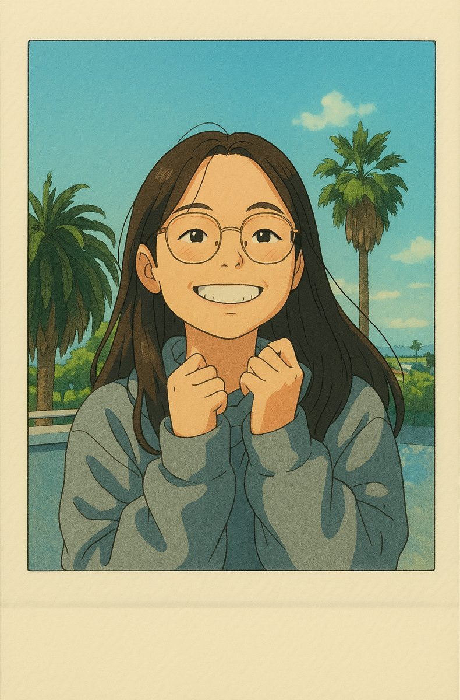

Film Assistant Editor & Editor
Hover to scrub and click a clip for its credit. Zoom with the slider or ⌘/Ctrl + scroll; J and L jump between clips.Tap a clip to preview it, then tap again for its credit. Use the slider to zoom.
Years are release years. The timeline shows when I worked on each project.
I'm a film editor and assistant editor who loves exploring family dynamics, human psychology, and the ways we experience reality through story. Born in Hunan, China, adopted and raised in St. Louis, and now based in Los Angeles, my background influences both the stories I choose and the way I collaborate.
I work primarily in Avid Media Composer and DaVinci Resolve across narrative, unscripted, and branded projects, with branded work edited primarily in Premiere Pro. I'm currently looking to jump to scripted film and television.
Working as both an assistant editor and editor keeps me engaged with both the creative and technical sides of the craft, and I find joy in doing both kinds of work.
My personal projects often focus on stories that explore perception, memory, and human connection, and I have a particular love for animation. I'm currently directing Orizuru, an animated short film I wrote.
Outside of filmmaking, I enjoy gaming, rock climbing, arts and crafts, and spending time with animals. I’m always thrilled to dive into a new project, so don’t hesitate to reach out!
